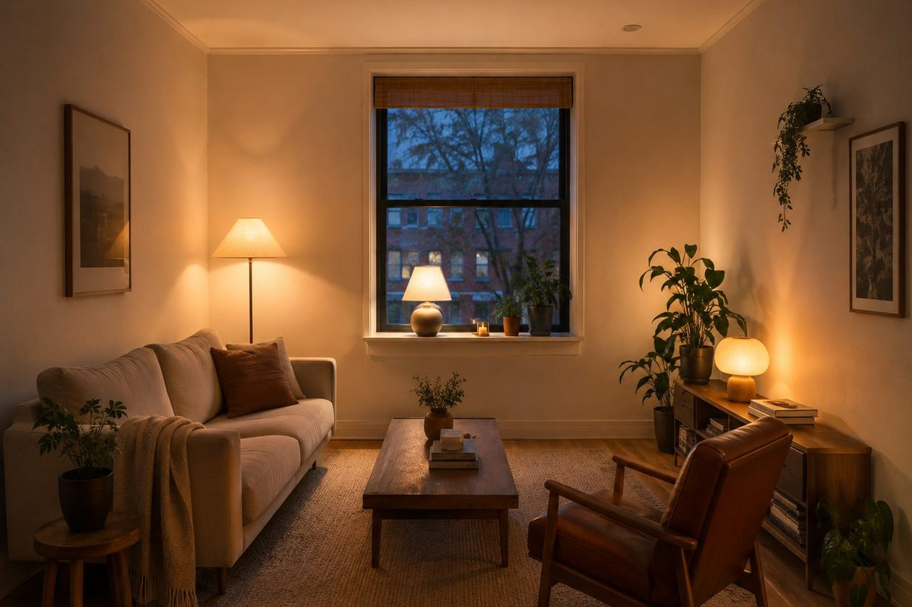
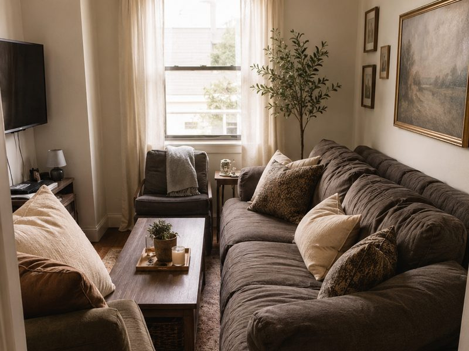
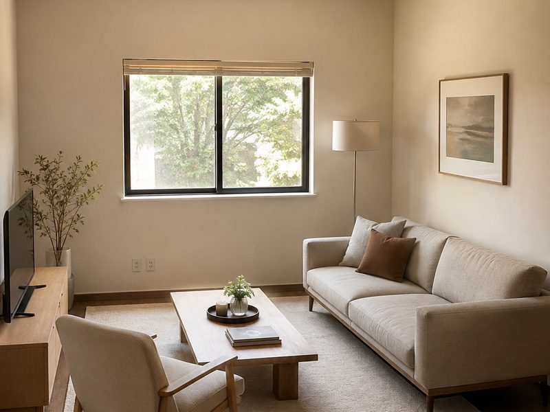
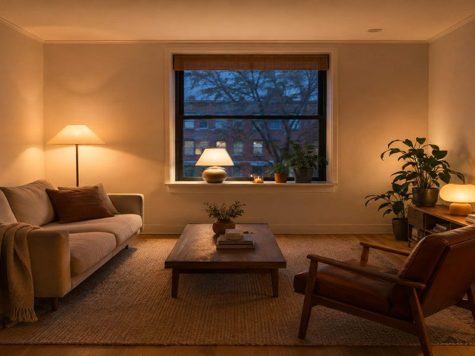
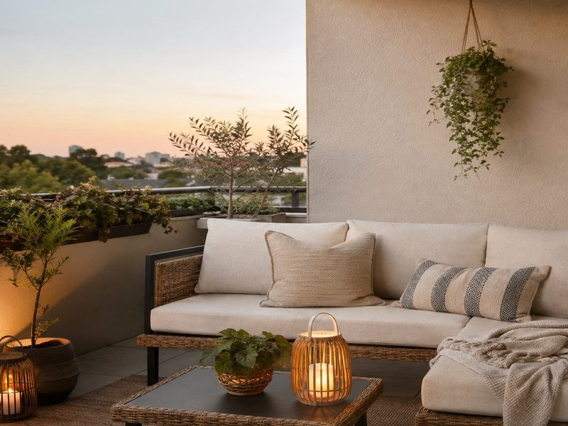
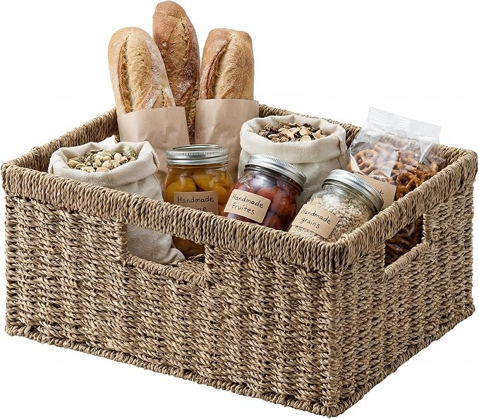

Small Living Rooms Fail On Furniture Size, Not Square Metres
Small living rooms are usually blamed on the flat. Most of the time the room is fine and the furniture in it was bought for a different one.
The short version
- Depth is what kills a small room, not length. A sofa 100cm deep eats a metre of floor you cannot walk on.
- Legs and low backs let you see the floor and the wall behind, and a room reads as big as the floor you can see.
- The rug should reach under the furniture. A small rug floating in the middle cuts the room into pieces and makes it look smaller than bare floor would.
As an Amazon Associate I earn from qualifying purchases. Links below are affiliate links (#ad) - they cost you nothing extra. Nothing here is a paid placement, and no brand sees this page before it goes up.
The three measurements that actually decide it
Depth. Under 90cm for a small room. Deep sofas are comfortable in a showroom and immovable in a flat - they push the coffee table into the walkway and there is nowhere left to stand.
Height of the back. A low back lets you see the wall above it. A high back builds a second wall in the middle of the room.
Leg height. Visible floor under the furniture is the cheapest trick there is. Skirted bases sit like blocks; slim legs disappear.


Why your rug is making it worse
A rug that only sits under the coffee table draws a small box in the middle of the floor, and the room becomes that box. Go up a size until it reaches under the front legs of everything.
Flat weave over pile in a small room - it stays flat under furniture and does not stack up at the door. And it can go straight over fitted carpet, which is the fix most renters do not know they are allowed.
What to check before you buy
Measure the door, not the room. The most expensive mistake in a small flat is furniture that will not go in. Check the narrowest point of the route, including the turn at the top of the stairs.
Modular over fixed. Pieces that come apart go up stairs, change shape when you move, and can be added to. A single fixed three-seater is a bet that you will never move.
Colour close to the walls. Contrasting furniture chops the room up. Tonal furniture lets the eye run past it.
Buy the light before the second chair. A lamp changes the room more than another seat nobody sits in.
What we would actually buy

Our illustration of the look - not the product photoModular sofa for small rooms
Modular is the honest answer for a rented flat. It goes up the stairs in pieces, it changes shape in the next place, and you can start with two seats and add later. Check the seat depth before anything else - under 90cm or it will own the room.
Best for: renters who move often and cannot get a fixed sofa up the stairs
See it →paid link
Flat jute rug, ivory
Buy this one size larger than feels right. Flat weave stays put under furniture, goes over fitted carpet, and ivory keeps a small room open where brown jute pulls it dark.
Best for: a room where the furniture is fine and the floor looks patchy
See it on Amazon →paid link
Our illustration of the look - not the product photoCompact seating and side pieces
For the second seat and the small tables. This is where to spend the least - a light chair that can move is worth more in a small room than a heavy one that cannot. Check the depth here too, not just the width.
Best for: filling out a room without adding bulk
See it →paid link
Matching seagrass storage baskets
Open shelves read as clutter because the containers do not match, not because of what is inside them. Buying one size several times over is the cheapest way to make a shelf look deliberate. Measure the shelf depth first - a basket that overhangs undoes the effect it was bought for.
Best for: open shelving that looks messy however tidy it actually is
See it on Amazon →paid linkIf you only do one thing
Measure the depth of what you own before you blame the room. Under 90cm and on legs, with a rug that reaches the furniture, will do more than any amount of rearranging.
How we choose
We look for pieces that change how a small room works, not the cheapest option and not the most photographed one. Everything here has to survive a rental: no drilling, no permanent fittings, nothing that needs a second person to install.
Room images on this site are our own illustrations, not photographs of the products. We link to the retailer so you can see the real item.
Written and selected by Rooms and Roads · Updated August 2026 · links checked August 2026